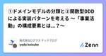
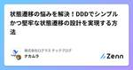
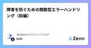
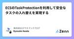
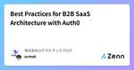
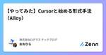
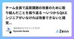
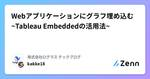
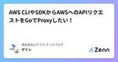

株式会社ログラス テックブログのフィード
https://zenn.dev/p/loglass
株式会社ログラスは「良い景気を作ろう。」をミッションに、企業経営を推進する次世代型経営管理クラウド「Loglass 経営管理」を開発し提供しています。
フィード

①ドメインモデルの分類と②関数型DDDによる実装パターンを考える 〜「事業活動」の構成要素とは...？〜
株式会社ログラス テックブログのフィード
!この記事は 株式会社ログラス Productチーム Advent Calendar 2024 のシリーズ 1、9日目 の記事です。 サマリードメインモデルには以下の種類がありそう🧠 業務知識: 知識レベル🏃 業務フロー: オペレーションレベル🧠業務知識（知識レベル）について、以下のような分類ができそう業務手順の知識: プロセスモデル業務資源情報の知識: リソースモデル属性・値の知識: プロパティモデル意思決定・制約条件の知識: ポリシーモデル🏃業務フロー（オペレーションレベル）について、以下の構成要素がありそう業務連鎖: ワー...
1日前

状態遷移の悩みを解決！DDDでシンプルかつ堅牢な状態遷移の設計を実現する方法 1
1
株式会社ログラス テックブログのフィード
!この記事は 株式会社ログラス Productチーム Advent Calendar 2024 のシリーズ 2、9日目 の記事です。 はじめにドメイン駆動設計（DDD）は、ビジネスドメインをソフトウェアに正確に反映させるための強力なアプローチです。その中でも、状態遷移の設計は、ドメインの振る舞いを表現するための核となる部分です。ドメインモデルで「状態」をどのように扱うかは、システム全体の品質に大きな影響を与えます。例えば、注文管理システムでは、注文が「未処理（注文時）」→「処理中」→「配送中」→「配送完了」と遷移する過程を管理する必要があります。この状態遷移を正しく設計しな...
2日前

障害を防ぐための関数型エラーハンドリング（前編） 1
株式会社ログラス テックブログのフィード
!この記事は 株式会社ログラス Productチーム Advent Calendar 2024 のシリーズ 2、8日目 の記事です。いつの間にか始まっていたアドベントカレンダー、本日は8日目になります。気がつけばもう12月ですね。迫りくる年末年始、システム障害に振り回されずゆっくり過ごしたいものですよね。さて本日はそんな障害に立ち向かうための、エラーハンドリングについてお話したいと思います。ソフトウェア開発においてエラー処理は避けて通れない課題です。しかし、適切でないエラー処理はシステム全体の障害を引き起こしやすく、特に例外（Exception）の濫用は重大な問題を生みがち...
2日前

ECSのTaskProtectionを利用して安全なタスクの入れ替えを実現する
株式会社ログラス テックブログのフィード
!この記事は 株式会社ログラス Productチーム Advent Calendar 2024 のシリーズ 1、8日目 の記事です。 はじめにこんにちは、ログラスでエンジニアをしています粟田（@wooootack）です。今日は久しぶりに純粋な技術記事を書こうと思います！ぜひ最後までお付き合いください。唐突ですが、皆さんのバックエンドアプリケーションには非同期処理が実装されているでしょうか？恐らく、ほとんどの方が 「はい」 と答えるのではないでしょうか。現代のアプリケーションにおいて、非同期処理は非常に重要な役割を担っています。特に、ユーザーリクエストに対する迅速な応答...
2日前

Best Practices for B2B SaaS Architecture with Auth0 1
株式会社ログラス テックブログのフィード
はじめに!この記事は 株式会社ログラス Productチーム Advent Calendar 2024 のシリーズ 1、7日目 の記事です。ログラスに転職して3年が経ち、ついに4年目に突入してしまいました。ログラスで書くアドベントカレンダーはこれで3回目になると思うと、何を書くか迷ってしまいますね...。ということで、今回は過去に書いていたAuth0 Organizationの記事の発展版を書いてみようと思います。https://zenn.dev/urmot/articles/8c18d8b49d822c今回の記事ではAuth0の「Multiple Organiza...
3日前

【やってみた】Cursorと始める形式手法（Alloy） 31
株式会社ログラス テックブログのフィード
!この記事は毎週必ず記事がでるテックブログ "Loglass Tech Blog Sprint" の 68 週目の記事です！2 年間連続達成まで 残り 38 週 となりました！ はじめに（前置き）こんにちは、世界。ログラスでQAエンジニアを担当している大平です。突然ですが、みなさん、仕様のレビューをしていますか？レビューをしている場合は、どうやって行っていますか？私はQAエンジニアとして、過去に実施したテスト経験や起きた不具合、既存の機能との整合性や矛盾点、競合製品がどうなっているか、テストのしやすさなどの観点でレビューを実施します。（ちなみにレビューについては、書籍...
5日前

チーム全員で品質課題の改善のために取り組んだことを振り返る 〜いつからQAエンジニアがいなければ改善できないと錯覚していた？〜 1
株式会社ログラス テックブログのフィード
!この記事は 株式会社ログラス Productチーム Advent Calendar 2024 のシリーズ 2、5日目 の記事です。 はじめにこんにちは、ログラスのエンジニアの粟田（@wooootack）です。時間の流れは早いもので、私がログラスに入社してもうすぐ1年が経過します。今回は、入社してからの1年を振り返り、私たちのスクラムチームが直面した品質課題と、それを乗り越えるための奮闘を実体験に基づいて紹介します。チームに専属QAがいない環境でも、チーム全体で品質課題の改善に向けてどのような取り組みを行ったのか、その過程で得られた学びや教訓を共有していきます。エッセイ要...
5日前

Webアプリケーションにグラフ埋め込む~Tableau Embeddedの活用法~
株式会社ログラス テックブログのフィード
はじめに!この記事は 株式会社ログラス Productチーム Advent Calendar 2024 のシリーズ 2、4日目 の記事です。こんにちは、ログラスでエンジニアをしております、田中です（@kakke18_perry）。Webアプリケーション上にあるデータ、例えばユーザーの行動ログなどをダッシュボードで視覚的に表現したいというニーズは多いのではないでしょうか。Webアプリケーションにグラフ機能を実装する方法は複数あります。自前で実装する、Chart.jsなどのライブラリを使用する、BIツールを組み込むなど、様々なアプローチが考えられます。本記事では、その選...
6日前

AWS CLIやSDKからAWSへのAPIリクエストをGoでProxyしたい！ 1
株式会社ログラス テックブログのフィード
はじめに!この記事は 株式会社ログラス Productチーム Advent Calendar 2024 のシリーズ 2、3日目 の記事です。re:InventのKeynoteが楽しみなガイです。飲み会帰りの電車で家とは逆向きに向かい終点までついたり、その後正しい向きで目的の駅を乗り過ごしたり散々な帰路の中、AWSへのAPI CallをProxyしたいなと思ったらしい履歴がSlackに残ってたので試してみました 🐰🍺 AWSのAPIについてまずはAWSのSDKやCLIコマンドからリクエストを受け取るにはどのようにSDKなどからリクエストが行われるかを知らなければなりま...
7日前

Polarsのpushdown深堀り（S3上のParquetファイルを例に）
株式会社ログラス テックブログのフィード
!この記事は 株式会社ログラス Productチーム Advent Calendar 2024 のシリーズ 2、2日目 の記事です。ログラスの龍島（@hryushm）です。最近は本当に寒いですね。寒いと言えば北極。北極と言えばホッキョクグマ。ホッキョクグマと言えばPolarsです。Polarsの特徴として、外部リソース（例：S3上のParquetファイル）からのデータ取得時に必要なデータのみに絞って取得する述語pushdown機能があります。https://pola.rs/posts/predicate-pushdown-query-optimizer/これに関して上記のP...
8日前
目指せグローバルエンジニア！今日から使えるシーン別英語表現20選
株式会社ログラス テックブログのフィード
!この記事は毎週必ず記事がでるテックブログ "Loglass Tech Blog Sprint"の67週目の記事です！ 2年間連続達成まで残り39週となりました！みなさんこんにちは。2024年11月からログラスでCTO をつとめております、いとひろ（@itohiro73）です。今回のCTO交代にあたり、前任の創業者CTOである坂本さん（@http204）と対談したこちらの記事でもお話ししたのですが、ログラスでは開発ケイパビリティの拡張のため、海外開発拠点を立ち上げ、グローバルな開発組織へとUpdate Normal[1]していこうと考えております。そこで、本記事ではエンジニアが...
11日前
EMが赤裸々に語るチーム立ち上げから得た学び
株式会社ログラス テックブログのフィード
!この記事は毎週必ず記事がでるテックブログ "Loglass Tech Blog Sprint" の 66週目の記事です！2 年間連続達成まで 残り40週 となりました！ログラスのよしだです。最近戸建てに住み始めました。巨大な自作PCをいじっている感覚に陥ってしまい、日々どうカスタマイズするか？動線は？配線は？と考えるのが楽しい反面、課題も次々に現れています。洗濯機が階段の手すりで搬入できなかったり、カーテンレールがないのでまだカーテンが取り付けられなかったりと、試行錯誤の連続です。楽しさと課題が隣り合わせなのは、戸建て生活だけでなく、チームの立ち上げでも同じだと痛感しています...
18日前
チームでテストをアクティビティとして捉えどこでもテストするまでの道のり
株式会社ログラス テックブログのフィード
!この記事は毎週必ず記事がでるテックブログ "Loglass Tech Blog Sprint" の65週目の記事です！2年間連続達成まで残り41週となりました!こんにちは、ログラスのQAをしているコタツです。一気に寒くなってきましたね。体調崩さないよう暖かくしてまいりましょう。今日はログラスにおいてどこでもテストを実践するために工夫していることをご紹介していこうと思います。 前提ログラスのQAはアジャイルテスティングの考え方に基づいて、プロダクト開発チーム全体のQAケイパビリティを上げることをミッションとしています。参考資料：https://speakerdeck.c...
1ヶ月前
AIアシスタントはどうやってパスワードを守っているのか 〜Gandalfで学ぶプロンプトインジェクション対策〜
株式会社ログラス テックブログのフィード
!この記事は毎週必ず記事がでるテックブログ "Loglass Tech Blog Sprint" の64週目の記事です！2年間連続達成まで残り42週となりました！こんにちは、kagaya(@ry0_kaga)です。みなさん、Gandalfをプレイしたことはありますでしょうか？Gandalfはプロンプトインジェクションをゲーム形式で学習できるサービスで、AIアシスタントからパスワードを聞き出すことでプロンプトインジェクションについて理解を深めることができます。今回は、Gandalfからパスワードを聞き出す中で学んだ「プロンプトインジェクションをどう防ぐか」についてです。Ch...
1ヶ月前
新卒向けログラス短期インターンシップを支える技術
株式会社ログラス テックブログのフィード
!この記事は毎週必ず記事がでるテックブログ "Loglass Tech Blog Sprint" の 63 週目の記事です！2年間連続達成まで 残り 43 週 となりました！ 背景株式会社ログラスは2024年の夏から新しく新卒エンジニアの採用に向けて短期インターンシップの開催を始めました。コンテンツを作成するにあたり、学生の皆さんにとってログラスの魅力が伝わるにはどうしたらいいだろうか、どうしたら学びのあるコンテンツになるだろうかなどさまざまな観点で議論を重ねてきました。この記事ではその議論の結果選定した開発手法・言語・フレームワークなどの紹介とその選定理由などについて記...
1ヶ月前
Polars, DuckDBのデータソースの違いによる性能比較
株式会社ログラス テックブログのフィード
!この記事は毎週必ず記事がでるテックブログ "Loglass Tech Blog Sprint" の 62 週目の記事です！2年間連続達成まで 残り 44 週 となりました！ログラスの龍島(@hryushm)です。寒くなってきましたね。最近は鴨肉を焼くのがマイブームです。ということで今日はPolarsとDuckDBの話です。PolarsとDuckDBは、近年注目を集めているデータ処理のための高速なクエリエンジンです。それぞれ異なる強みを持っていますが、どちらもシングルノードでOLAPの分析処理を非常に高速に実行できるという共通点があります。この記事では、データソースにPostg...
2ヶ月前
KotlinのCIをキャッシュと実行制御で60%削減した
株式会社ログラス テックブログのフィード
!この記事は毎週必ず記事がでるテックブログ "Loglass Tech Blog Sprint" の 61 週目の記事です！2年間連続達成まで 残り 45 週 となりました！ はじめにログラスのソフトウェアエンジニアのmako-makokです！最近バックエンド周りのCIをリプレイスしたので、その過程を記事にしました。まだまだ理想には遠いCIですが、ワークフローファイルの整理とキャッシュと実行制御によって、実行時間を60%削減しました。構成など、記事を見てくださっている方の参考になれば幸いです。 ログラスのバックエンドの技術スタックCIに関連する技術スタックを簡単に...
2ヶ月前
その先に進むためのモジュラーモノリス再入門
株式会社ログラス テックブログのフィード
!この記事は毎週必ず記事がでるテックブログ "Loglass Tech Blog Sprint" の 60 週目の記事です！2年間連続達成まで 残り 46 週 となりました！「モジュラーモノリス」はここ数年で広く普及してきました。実際にモジュラーモノリスを取り入れた開発事例を多く見かけるようになりました。当記事では改めてモジュラーモノリスの起源を遡り、また、さらにその先に進むためにどのような準備をしておくべきかを軽くまとめてみます。 モジュラーモノリスとは モジュラーモノリスの起源は 2018 年頃「モジュラーモノリス」という言葉の正確な起源は把握していませんが、Simo...
2ヶ月前
Cloudflare WorkersのCron TriggersでHabitifyの習慣記録を定期的にSlackに流す
株式会社ログラス テックブログのフィード
!この記事は毎週必ず記事がでるテックブログ "Loglass Tech Blog Sprint" の 59 週目の記事です！2 年間連続達成まで 残り 47 週 となりました！CRE（Customer Reliability Engineer）の山﨑（@zaki___yama）です。今回は業務と全く関係ない話です。 はじめに何事も長続きしないのが悩みなのですが、最近、日々の習慣化したい行動を Habitify というアプリで記録するようにしました。きっかけとなったのはこちらのブログ記事です。https://kakakakakku.hatenablog.com/entr...
2ヶ月前
DDDで集約を跨いだ情報でロジックを構築するための「getter高階関数パターン」の紹介
株式会社ログラス テックブログのフィード
はじめに今回はDDDで集約を跨いだ情報でロジックを構築するためのパターンについて紹介していきます。DDD（ドメイン駆動設計）における「集約（Aggregate）」とは、関連するオブジェクト（エンティティや値オブジェクト）を一つにまとめた単位のことを指します。集約はドメインのビジネスロジックの適用や整合性を維持するために定義されます。永続化は集約単位で行われます。例えばECサイトの注文という集約には、一つの注文に複数の注文明細があるとします。この注文と注文明細はそれぞれがエンティティであり、このとき集約は「複数の注文明細を持つ一つの注文」という単位で管理され永続化されます。一つの...
2ヶ月前